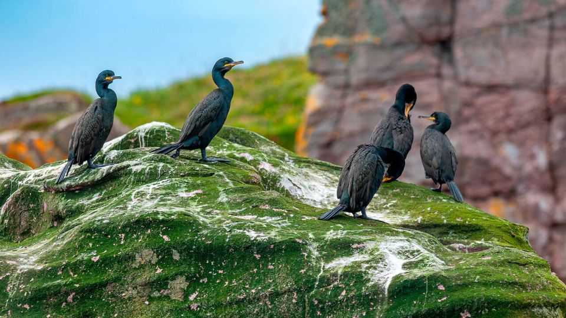

Spare a thought for the European shag
But other seabirds off Britain’s coast are showing signs of resilience

Nov 5th 2026
Pity the European shag. An agile diver, it is clumsy on land and barely waterproof. Winter storms off Britain’s coast can be deadly. Between 1986 and 2024 shag numbers dropped by 71%, according to the Seabird Monitoring Programme (SMP).
Almost two-thirds of British seabird species are in decline, according to the latest census. Oil spills are thankfully less frequent than they were in the 20th century, but other threats loom, including climate change, overfishing, avian flu and invasive rats.
Yet some birds, especially in the auk family, are holding up. Razorbill numbers have grown by 110% since 1986, according to the smp. Erin Taylor, an SMP ornithologist, speculates that auks might adapt better to warming seas than other seabirds. Deeper dives and flexible diets expand their prey options; short migrations keep them close to their North Sea breeding grounds. By contrast, Arctic terns, which were added to the conservation “red list” in 2024 after population declines, migrate to polar regions where the climate is changing rapidly.
Tim Birkhead, an ornithologist who has studied guillemots on Skomer Island off Wales for over 50 years, thinks there might be something special about Britain’s south-west waters. He credits the bird boom to a stroke of oceanographic luck. Nutrient-rich upwellings, marine protected areas and the absence of industrial sand-eel fishing may all play a part, but the mechanisms are not fully understood.
Even such havens are fragile. An outbreak of avian flu on Skomer in 2023 killed roughly a third of breeding guillemots, and many dead auks have washed up on Britain’s coast this year.
Rigorous scientific monitoring can make a difference. Tracking colonies takes skill, effort and money (drones are increasingly used to survey hard-to-reach locations). When data showed that little terns were breeding earlier in spring, leaving their eggs vulnerable to high tides, conservationists built up beach heights to lift nests away from danger. Even the shag was moved off a conservation red list in 2024. There is hope for it yet. ■